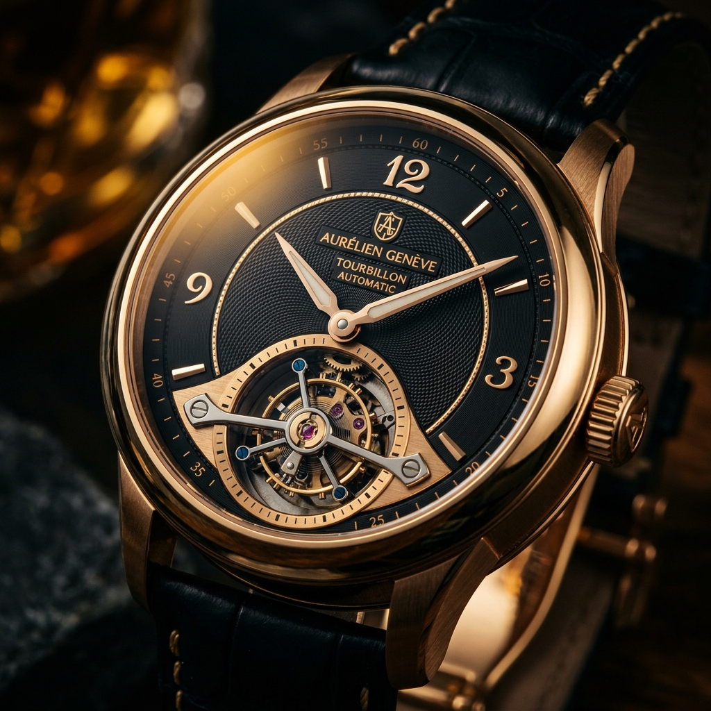
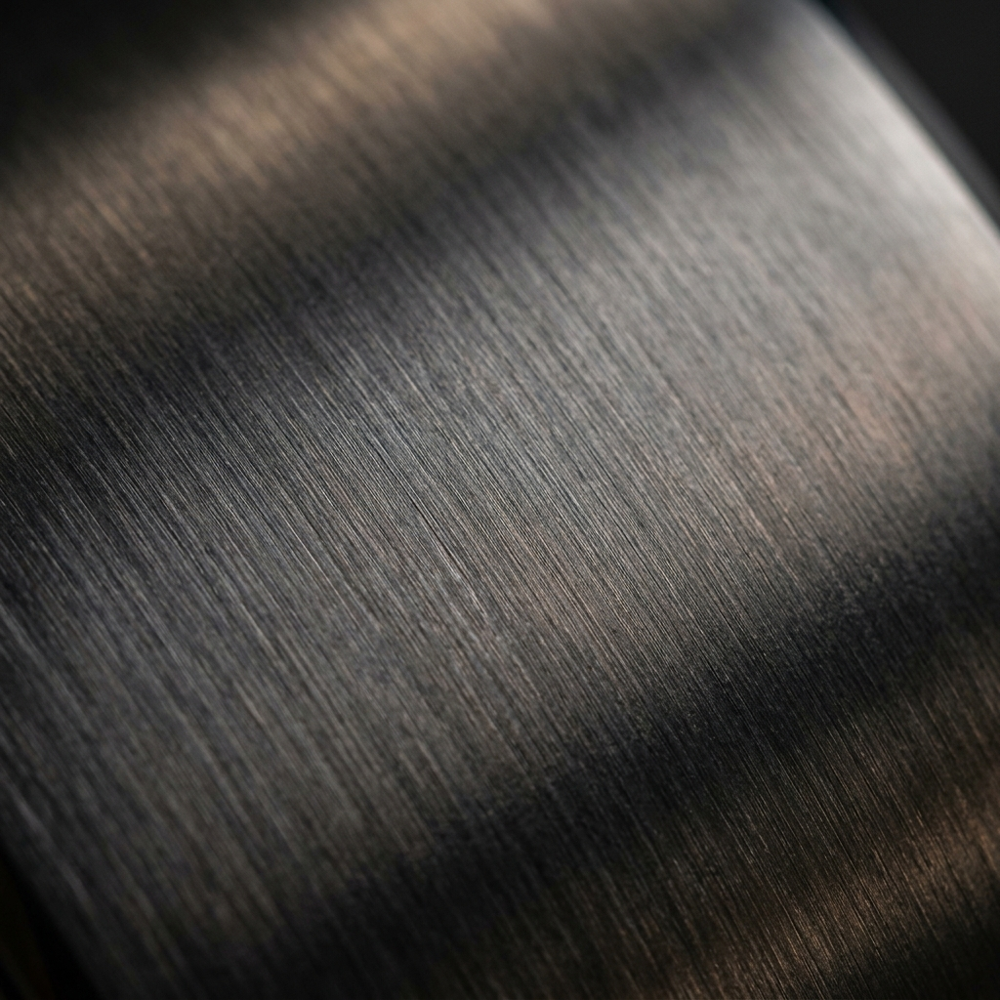
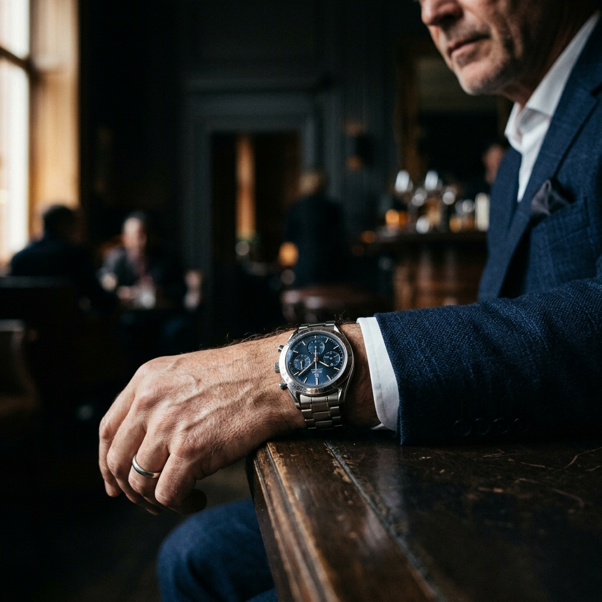

The KRONOS Journal
Discover the stories behind the craft — from the ateliers of Geneva to the wrists of visionaries. Watchmaking narratives, material science, and the pursuit of perfection.

The Art of Hand-Finished Movements
An intimate look inside the KRONOS atelier, where master watchmakers spend over 40 hours hand-finishing a single caliber — bevelling bridges, polishing jewel sinks, and engraving Geneva stripes with techniques unchanged for two centuries.

Forged in Fire: The Titanium Process
How KRONOS sources and mills aerospace-grade titanium into watch cases that defy weight and time.
Inside the Caliber K-4200
A technical deep dive into our latest self-winding movement — 312 components, 72-hour power reserve, and a silicon escapement.

A Week on the Wrist: The Navigator GMT
From boardrooms in Zürich to midnight arrivals in Tokyo — living with the KRONOS Navigator across five time zones.
Sapphire Crystal: Engineering Transparency
The science behind our double-domed anti-reflective sapphire — grown at 2,000°C and polished to optical perfection.
The Tourbillon Paradox
Born to defeat gravity in pocket watches, does the tourbillon still matter on the modern wrist? We examine the mythology and mechanics.
Luminescence: The Future of Dial Legibility
From radium to Super-LumiNova — how KRONOS developed a proprietary compound that glows for 14 hours in total darkness.